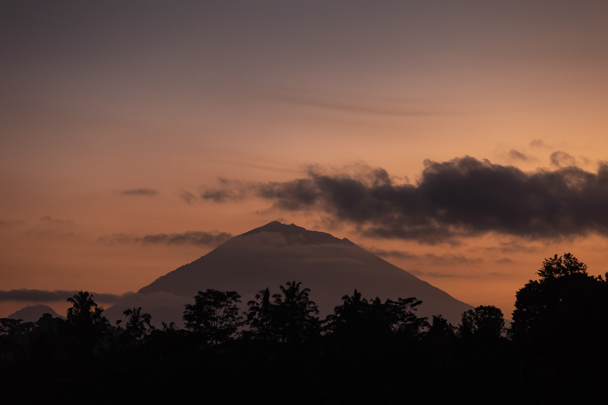

Cena privada
Cena a la luz de las velas en la jungla de Ubud
Solo el sonido del río y las antorchas encendidas para vosotros.
Bassa Moon es un viaje de slow luxury de entre 10 y 14 días por Bali, pensado para parejas: villas privadas con piscina, cenas reservadas en plena jungla y amaneceres en templos sin nadie alrededor. No es un paquete cerrado, sino un punto de partida que adaptamos contigo, combinando el interior de la isla y los acantilados del sur.
| Duración orientativa | 10–14 días. El ejemplo desarrollado en esta página son 12 días / 11 noches. |
| Estilo | Slow luxury romántico · 100% privado · villas con piscina propia. |
| Zona principal | Bali interior (Ubud) combinado con los acantilados del sur (Uluwatu / Bukit). |
| Para quién | Parejas en luna de miel, aniversarios o escapadas que buscan momentos memorables sin masificación. |
| Mejor época | Abril a octubre, estación seca en Bali. |
Bassa Moon nace de una pregunta sencilla: ¿qué hace que un viaje en pareja sea memorable de verdad, más allá de la foto perfecta? Bali ofrece algunos de los escenarios más fotogénicos del planeta, pero el verdadero lujo está en los detalles que nadie ve: una cena reservada solo para vosotros en mitad de la jungla, un amanecer en un templo vacío, una villa donde el servicio desaparece hasta que lo necesitas.
El itinerario combina el interior de Bali —Ubud, arrozales, templos de montaña— con los acantilados del sur, donde las villas se abren al océano Índico y los atardeceres duran una hora. El ritmo es lento: dos o tres experiencias por jornada, nunca una agenda apretada, y mucho tiempo para simplemente estar.
Las experiencias que ves a continuación son ejemplos reales de lo que puede formar parte de tu Bassa Moon — no un álbum cerrado, sino el punto de partida sobre el que diseñamos tu viaje.
Una selección de experiencias que diseñamos habitualmente dentro de esta línea. Cada Bassa Moon es distinto: estas son referencias para inspiraros, no una lista cerrada.

Solo el sonido del río y las antorchas encendidas para vosotros.

El Monte Agung enmarcado entre las puertas, sin colas.

Una forma distinta de ver Bali, solo para dos.

Butler exclusivo, pétalos y velas — sin que tengas que pedirlo.
No exclusivamente. Aunque está pensado para lunas de miel, Bassa Moon funciona igual de bien para aniversarios, propuestas de matrimonio o cualquier escapada en pareja que busque momentos memorables, privacidad y un ritmo pausado, sin necesidad de justificar la ocasión.
Entre 10 y 14 días, según disponibilidad y preferencias. El ejemplo de referencia de esta página son 12 días (11 noches): una semana en el interior de Bali (Ubud) y unos días finales en los acantilados del sur.
No. Bassa Moon es un punto de partida, no un paquete cerrado. Las experiencias de esta página son ejemplos de lo que puede incluir tu viaje; el itinerario final, las villas y las actividades se ajustan contigo durante el diseño del viaje.
Sí. Bassa Moon y Bassa Reset comparten zona (Bali) y son fáciles de combinar en un mismo viaje: unos días de desconexión slow luxury seguidos de unos días más enfocados en momentos en pareja, sin cambiar de isla ni de ritmo.
Cuéntanos vuestras fechas, qué celebráis y qué no puede faltar. A partir de ahí construimos un itinerario a vuestra medida.
Diseña tu viaje